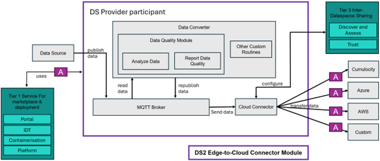

E2C - Edge to Cloud Connector
| Project Links |
|---|
| Software GitHub Repository https://github.com/ds2-eu/e2c.git |
| Progress GitHub Project https://github.com/orgs/ds2-eu/projects/24 |
General Description
Purpose: Dataspaces allow for data to be shared between data providers and data consumers. This includes data coming from sensors and devices at a high rate. This module is used to establish a secure edge-to-cloud connectivity for data providers to cloud-based IoT platforms like Azure IoT or Cumulocity IoT or AWS IoT via a MQTT bridge. The data providers will decide which data to share and with whom. In addition, the data quality can be monitored as well.
Description: The DS2 Edge-to-Cloud Connector module (DS2 E2C) will use Software AG’s open-source product thin-edge.io as background. The underlying communication relies on MQTT, a standards-based messaging protocol used for machine-to-machine communication. The data is locally collected on the edge device, mainly IoT-based but not exclusively, and published to the MQTT broker supplied by this module. Depending on the specific cloud platform used by the data provider or data consumer, appropriate rules will get applied to map the generic format to the specific cloud format. The data will constantly be monitored for loss of data quality which will be reported. Using the MQTT-bridge functionality the data and quality information gets mapped to the chosen cloud platform. The communication is encrypted via SSL/TSL using local certificates.
Architecture
The figure below represents the module fit into the DS-DS environment.
The figure below represents the actors, internal structure, primary sub-components, primary DS2 module interfaces, and primary other interfaces of the module. 
Component Definition
In E2C, data is collected via a MQTT broker and can be sent to different cloud environments such as Cumulocity, Azure or AWS via adapters built on top of the open-source software thinedge-io. Thin-edge.io is supporting any Linux distribution, in most cases even with the appropriate package manager. In DS2, thin-edge.io will mainly be used to connect on-premises edge devices to cloud environments of the Data Providers.
This module has the following subcomponent and other functions:
Edge-to-Cloud Connector Module – Core * MQTT Broker * This is the central message bus of the module, based on the open-source Mosquitto implementation. * Data Converter * It reads data, which was published under a certain broker topic, and transforms it to the specific format for the configured cloud platform * The data converter can use a pipeline of custom routines for specific tasks before ... * The transformed data is re-published to the MQTT broker under a different topic * Data Quality Module * The data read by the Data Converter component is constantly analysed by the Analyze Data component of this module to check if the data quality goals are met. The information is collected and sent back to the MQTT broker via the Report Data Quality component. * Other Custom Routines * Users can write their own routines to perform tasks on their data published to the MQTT broker before it is sent to the cloud platform via the cloud connector. This could be e.g. calculate moving averages, many examples are available in the thin-edge.io plugins directory. * Cloud Connector * Is a message bus where data can be published under a topic and data consumer can subscribe to these topics
External Components Used * Data Source * The data provider configures and selects where the data to be offered and shared comes from, most likely an edge device * Tier 1 Service Stack for Marketplace and Development * The module uses the marketplace especially for the configuration of the desired cloud adapter * Tier 3 Inter-Dataspace Sharing * The module uses the Discover and Trust components for the configuration of the desired cloud adapter * Cumulocity, Azure, AWS, Custom * These components represent the possible cloud adapters that can be configured. Besides connecting to the commercial clouds Cumulocity, Azure and AWS, one can write a custom adapter for any IoT platform having a MQTT connector, e.g. the open-source ThingsBoards platform.
Screenshots
Commercial Information
| Organisation (s) | License Nature | License |
|---|---|---|
| Software GmbH | Open Source | Apache 2.0 (pending) |
Top Features
1. Data streaming: Upload relevant data to be shared in dataspaces from devices or existing APIs.
2. Cloud platform agnostic: E2C allows to stream data to any cloud platform by it's extensible connectivity feature.
3. No vendor lock-in: Most platforms provide dedicated software to connect devices and data sources - by using those, migrating to another platform is a tedious process. In E2C, switching to another supported platform can be as easy as UI-led configuration.
4. OpenAPI specification: Import your existing OpenAPI specs to define new data streams from existing APIs.
5. Query Builder: Build queries and filters in the user interface to select only the data you need on an attribute level.
6. Time windows: Define time windows for data streaming.
7. Data mapping: Map data from source to target data models.
8. Configure once: Once the streaming services are configured, they can be executed on demand.
How To Install
Requirements
N/A
Software
- Docker runtime
- Python3, pip
- Git
Summary of installation steps
- Clone Git repository
- Set cloud platform user credentials
- Build & run E2C streamer container
- Execute E2C streamer
- Configure E2C streamer using E2C UI
Detailed steps
Run container
Clone E2C Git repository. docker-compose.yaml runs two containers.
One contains an MQTT-Broker while the other contains the E2C streamer component.
Both containers have access to the 'thin-edge' environment and can pub/sub to the broker.
Prior to starting the infrastructure, credentials to target cloud platforms have to be set in the docker-compose.yaml file.
Once the credentials have been set, the infrastructure can be started by executing
Running E2C stream component
Currently, E2C stream component is to be started manually.
To start the E2C streamer, switch into the tedge-container by running:
Once inside the container, the E2C streamer can be started using the following command:
The parameter --config config.json is optional and allows to pass an existing configuration file, while the streamer
can be configured entirely using the E2C UI.
Once the E2C streamer is running, it's configuration can be retrieved and updated by E2C UI. To start the UI, clone the UI Git repository and execute
E2C streamer is now ready to stream data to the configured cloud platform.
How To Use
To display the configuration UI, run
Other Information
No other information at the moment for E2C.
OpenAPI Specification
N/A
Additional Links
N/A